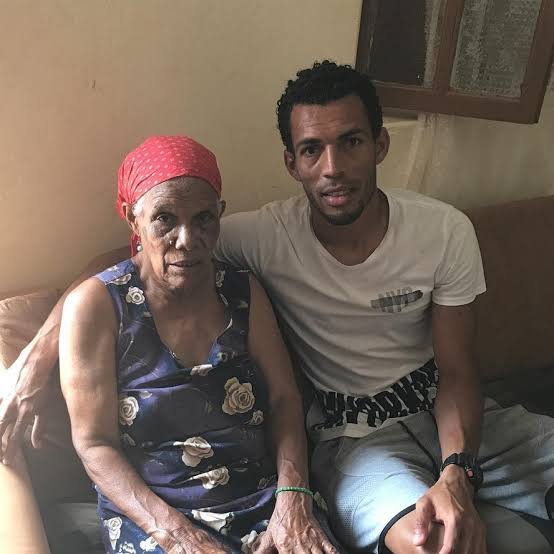

O goleiro Vozinha se tornou o primeiro grande herói e fenômeno viral da Copa do Mundo de 2026. Aos 40 anos, o capitão da seleção de Cabo Verde chocou o planeta ao garantir um empate histórico por 0 a 0 contra a poderosa Espanha na estreia do mundial
O nome real do goleiro é Josimar José Évora Dias. O carinhoso apelido "Vozinha" não tem nenhuma relação com a sua idade avançada no futebol
Vozinha construiu uma carreira sólida e de muita resiliência no futebol africano e europeu:Carreira: Começou em equipes locais de Cabo Verde, passou pelo Progresso Sambizanga em Angola e defendeu clubes na Europa, como o GD Chaves em Portugal.Lenda Nacional: Ele é o segundo jogador com mais partidas na história da seleção de Cabo Verde, somando 90 jogos oficiais e quatro participações na Copa Africana de Nações.O Sonho: Desde a infância, ele escrevia em cadernos que o seu maior objetivo de vida era classificar Cabo Verde para o seu primeiro Mundial e ser o capitão do time.
Vozinha A atuação monumental contra a Espanha mudou a vida do goleiro. Ele realizou defesas inacreditáveis diante de estrelas como Lamine Yamal e Rodri.Ao término do jogo, Vozinha chorou copiosamente no campo. Em entrevistas emocionadas, lamentou que seus avós já faleceram e não puderam ver o ápice de sua jornada. Ele também dedicou o resultado à sua mãe, que inicialmente não conseguiu viajar para os Estados Unidos por problemas burocráticos de imigração. O carisma do jogador, que se declarou fã de novelas e da cantora Ivete Sangalo, fez o público brasileiro adotá-lo como o grande xodó da competição.